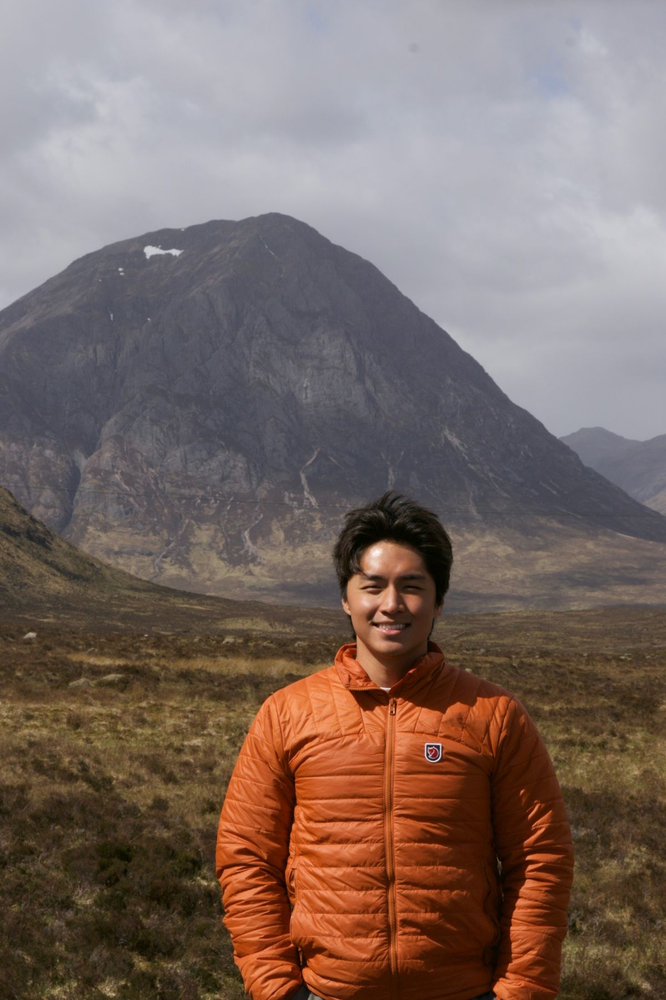
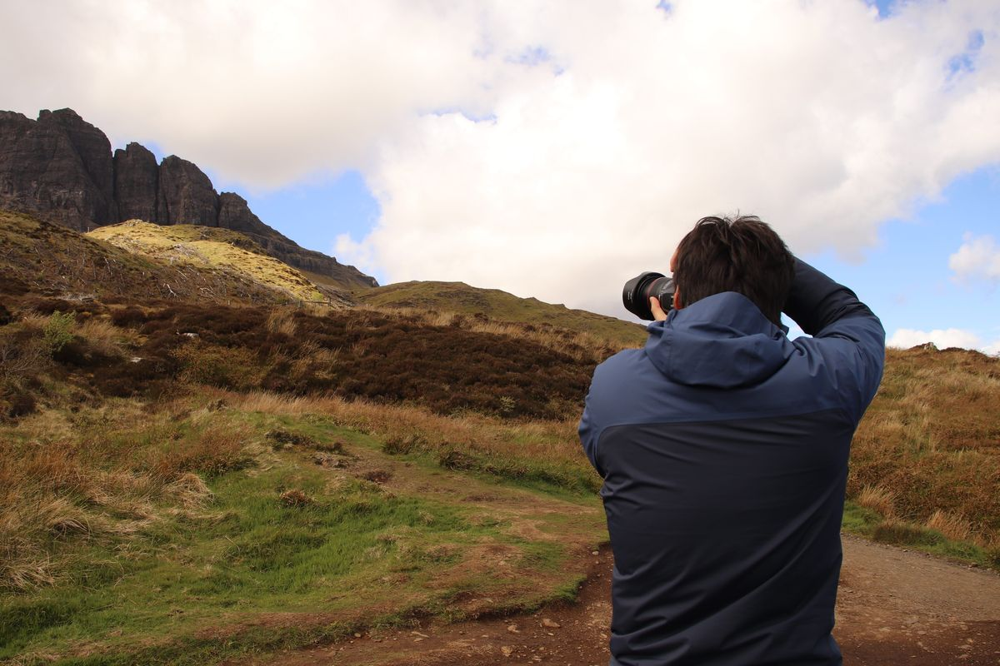
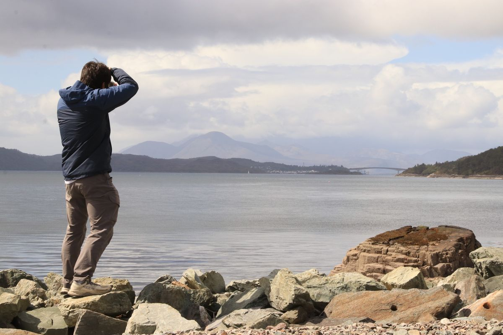

About
Taekyung Kim
I was born in Busan, Korea, and grew up in Colorado from the age of two. Home sat in the foothills of the Rockies — a city whose skyline was made not of concrete, but of limestone and shale.
With more trees and rocky ridgelines than people, it was the quiet landscape that first drew me to photography. Over the years, though, my lens kept turning toward the people around me, and capturing them has become just as much of a joy.
Today I’m based in Atlanta, Georgia, photographing a new kind of landscape — one of diverse cultures, tall trees, and, this time, real concrete skyscrapers.
Let’s work together →